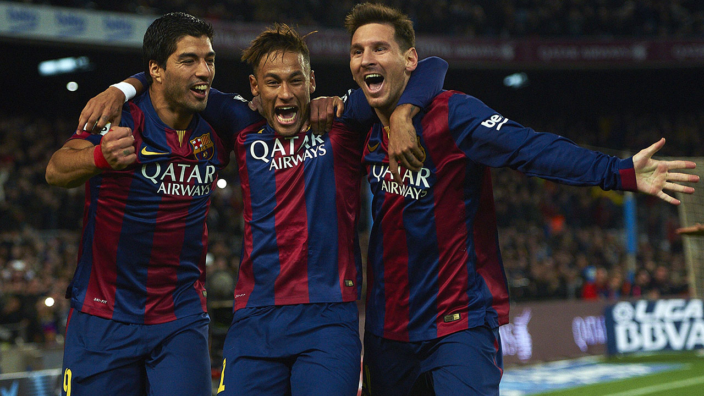

WELCOME TO FC BARCELONA

FC BARCELONA
Welcome to FC Barcelona, one of the most famous football clubs in the world. Founded in 1899 in Barcelona, Spain, FC Barcelona has a long and successful history in football. The club is famous for its blue and red colours, exciting style of play, legendary players, and passionate fans.
FC Barcelona has won many important trophies and has been home to some of the greatest footballers in history. The club's famous motto “Més que un club” means “More than a club.” It represents the strong connection between the club, its supporters, and the city of Barcelona.
❤️💙❤️💙